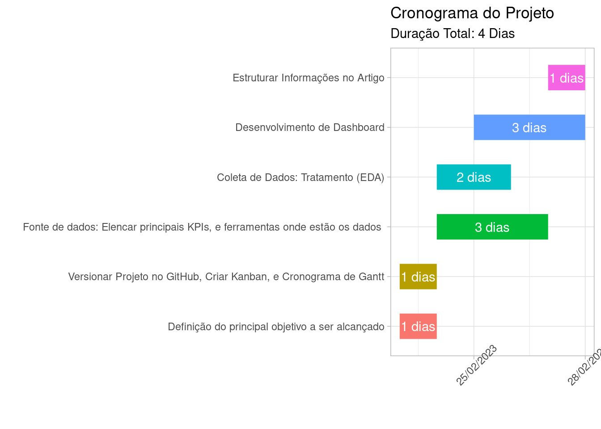

Utilizar técnicas de Data Science, Design Thinking e Metodologias Ágeis para entender quais são os principais indicadores de marketing e desenvolver um dashboard interativo.
Motivação do Trabalho
O setor de marketing é responsável por desenvolver estratégias de promoção e posicionamento das marcas no mercado varejista, conscientizando o público alvo sobre seus produtos e assim aumentando a receita por meio da “demanda estimulada”.
A globalização tornou o varejo um setor altamente competitivo. Onde a assertividade de marketing é um fator crucial para se destacar entre a concorrência, ganhar relevância e assim aumentar o marketshare da empresa.
Direcionadas para a cultura de data driven cada vez mais as organizações tomam decisões baseadas em dados, onde os KPIs (Key Performance Indicator) são o “leme do barco” e responsáveis por:
Medir o sucesso das Metas e/ou OKRs;
Acompanhar o progresso das iniciativas em andamento;
Identificar principais pontos de melhorias para “correção da rota”.
Organização do Trabalho
Cronograma de Projeto
Utilizamos o gráfico de Gantt para elaborar um cronograma de projeto e assim organizar tempos e processos.
#Utilizaremos a biblioteca tidyverse para o tratamento, manipulação e vizualização de dados.library(tidyverse)# Criamos um dataset com as principais tarefas e temposdados <-tibble(tarefa =c("Definição do principal objetivo a ser alcançado","Versionar Projeto no GitHub, Criar Kanban, e Cronograma de Gantt","Fonte de dados: Elencar principais KPIs, e ferramentas onde estão os dados ","Coleta de Dados: Tratamento (EDA)","Desenvolvimento de Dashboard","Estruturar Informações no Artigo"),inicio =as.Date(c("2023-02-23", "2023-02-23","2023-02-24","2023-02-24","2023-02-25","2023-02-27")),fim =as.Date(c("2023-02-24", "2023-02-24", "2023-02-27","2023-02-26","2023-02-28","2023-02-28"))) %>%mutate(tarefa =fct_inorder(tarefa), duracao =as.numeric(fim - inicio))# Criar o gráfico de Gantt com o ggplotggplot(dados, aes(x = inicio, y = tarefa, xend = fim, yend = tarefa, color = tarefa)) +geom_segment(size =10,show.legend =FALSE) +theme_light()+scale_x_date(date_labels ="%d/%m/%Y",date_breaks ="3 days", limits =c(min(dados$inicio),max(dados$fim))) +geom_text(aes(x = inicio + duracao/2, y = tarefa, label =paste0(duracao, " dias")),color="white")+theme(axis.text.x =element_text(angle =45))+labs(title ="Cronograma do Projeto", x ="", y ="", fill ="",subtitle =paste("Duração Total: 4 Dias"))

Versionar projeto no GitHub
O trabalho foi desenvolvido usando um “Projeto” dentro da IDE Rstudio, e também criamos um repositório do github para ajudar no armazenamento e versionamento de todos os arquivos.
Imagem do Repositório
Organização no Kanban
Adotamos a ferramenta Kanban para organizar as atividades do projeto no formato de metodologia ágil e assim ajudar no microgerenciamento: